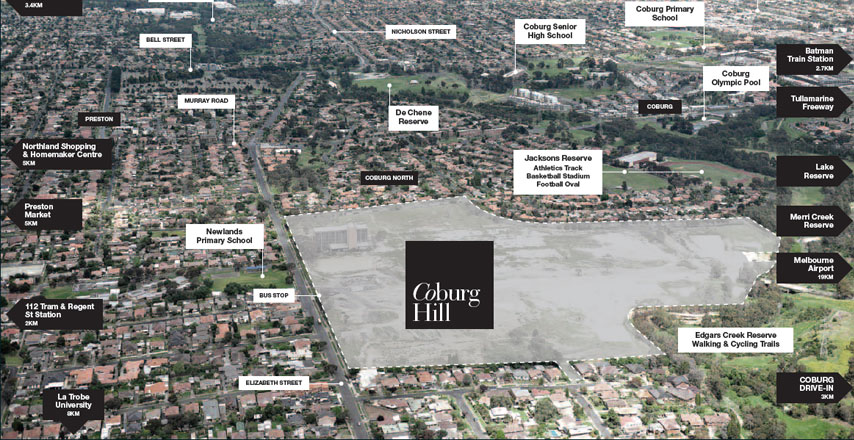
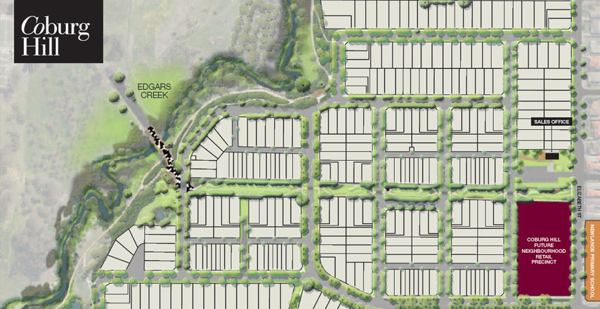
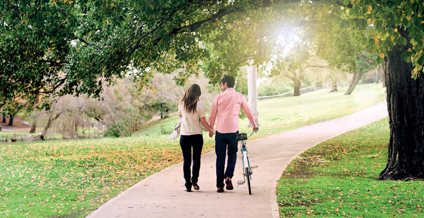
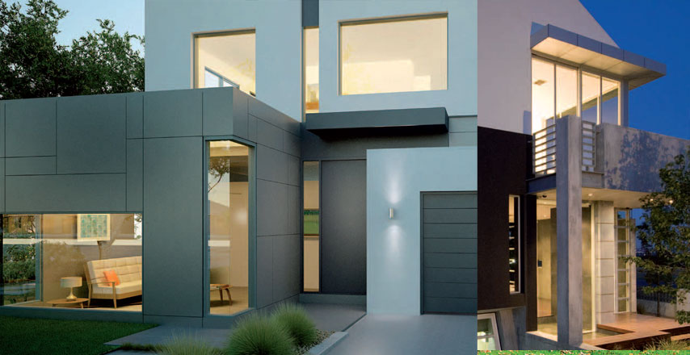
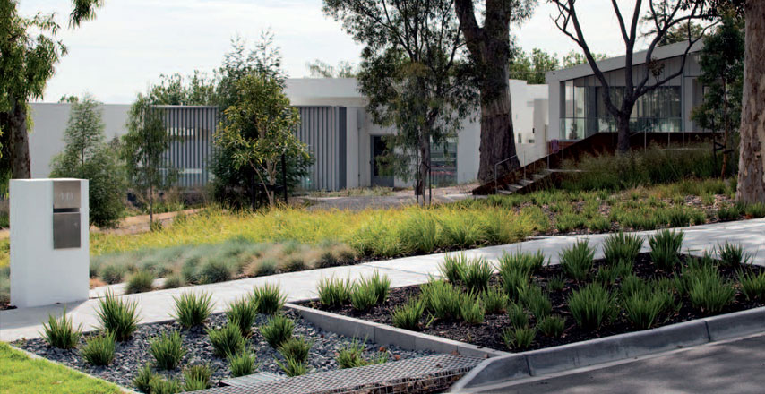

Welcome to the heart of Melbourne's vibrant, culturally diverse inner Northern suburbs.
The Coburg Hill masterplan has been designed for a range of lifestyles. The community combines the best of design principles with easy connections to adjacent neighborhood facilities, parklands, Edgars Creek and new open spaces. The resulting neighborhood will have cohesive and attractive streetscapes thanks to intelligent design and building guidelines.
Coburg Hill offers a tranquil yet convenient living environment with a large number of lots boasting city views. The heart of Melbourne's bustling CBD is just 9km away, and Coburg Hill is conveniently located near the freeway for easy access to Melbourne Airport and beyond.
Close to the city, but situated amongst natural surroundings: parklands, bike trails and playgrounds make Coburg Hill an idyllic retreat from everyday life. Whether you're walking, riding, or relaxing, Coburg Hill offers huge potential for exercise and outdoor leisure activities.
-

Convenient_
The Coburg Hill Masterplan has been designed for a range of lifestages and lifestyles. The Masterplan combines the best of design principles with vital connections to adjacent neighbourhood facilities, parklands, Edgars Creek and new open spaces. The resulting neighbourhood will have cohesive and attractive streetscapes, thanks to intelligent design and build guidelines, meaning homes will have well planned living and private open spaces. Welcome to the heart of Melbourne's vibrant, culturally diverse inner Northern suburbs. Coburg Hill is an exceptional and elevated location, conveniently situated between the many innercity amenities available within neighbouring Brunswick, Carlton and Preston. Enjoy the very best shopping, dining, and everything in-between.
-

Considered_
The Coburg Hill Masterplan
has been designed for a range of lifestages and lifestyles. The Masterplan combines the best of design principles with vital connections to adjacent
neighbourhood facilities, parklands, Edgars Creek and new open spaces. The resulting neighbourhood will have cohesive and attractive streetscapes, thanks
to intelligent design and build guidelines, meaning homes will have well planned living and private open spaces.
-
Cosmopolitan_
Looking for a place to grab a cappuccino or a spot of window shopping? Coburg Hill enjoys an abundance of local shopping and dining, including the many cafés and restaurants at nearby Sydney Road and Northland Shopping Centre. Imagine having all this excitement, entertainment and retail therapy right on your doorstep. There's also a wide range of schools in the area and plans for a brand new Coburg Hill retail centre
-
Connected_
Coburg Hill offers a tranquil yet convenient living environment with a large number of allotments boasting city views. The heart of Melbourne's bustling CBD is just 9km away. Which makes it a quick trip by car, bus, train or the 112 or 96 tram routes. And it's conveniently located near the freeway for easy access to Tullamarine Airport and
-
Cohabitate_
Just 9km from the hustle and
bustle of the city, yet Coburg
Hill is nestled amongst natural
surroundings. Parklands, bike
trails and playgrounds make
Coburg Hill an idyllic retreat
from everyday life. This stunning
development borders the beautiful
Edgars Creek Reserve, and is
close to Merri Creek, Jacksons
Reserve and Edgars Lake.
Whether you're walking, riding,
or relaxing, Coburg Hill offers
huge potential for exercise and
leisure activities
-

Community_
Coburg Hill is minutes away
from an extensive range of healthy
activities, sports and recreational
facilities, entertainment offerings
and wide, open spaces to ride, run,
walk or play. There's something
to compliment every lifestyle with
community favourites such as
Coburg Drive-in, the basketball
stadium, athletics tracks, cycling
tracks, Coburg Olympic Swimming
Pool and Edgars Creek Reserve,
just to name a few. John Fawkner
Moreland hospital and NMIT are
also nearby.
-

Contemporary_
What does your future home look like? Choose from the best of Melbourne's premier, award-winning builders to help create the home you've always wanted, in a location that's second to none. Our forthcoming display village will showcase the latest in quality designs. Each builder brings a distinctive offering to provide variety and choice to Coburg Hill residents. Within the design guidelines, there is freedom for you to express your individuality. And, importantly, each builder will comply with strict design principles around sustainability to ensure that we are creating a community for the future.
-

Conservation_
Coburg Hill has been designed to encourage and support a low energy footprint. All homes will be designed for lot orientation to maximize solar energy potential and achieve a 6-star energy rating. Coburg Hill is also using passive heating and cooling, water efficiency and rainwater to create a neighbourhood that is livable, healthy and sustainable. As the estate developer, Satterley is committed to sustainable management of natural resources. Satterley views this as a responsibility to future generations to protect and enhance the natural environment of Coburg Hill. Satterley is committed to extensive revegetation of Edgars Creek and new wetland systems to support this important ecological asset. In addition, Satterley has programs in place for conservation and management of water, and will plant native vegetation throughout the estate.